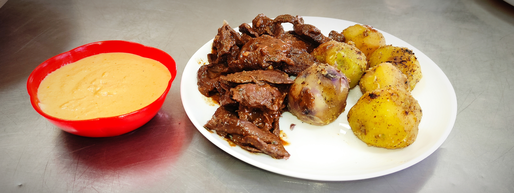

Anticucho

Anticucho —dish rich in flavor and tradition— is a popular street food
often enjoyed in the late afternoon and evening. Beyond its great taste, part
of the appeal lies in watching it being prepared: it’s grilled right
before your eyes, with flames leaping up as it cooks.
Ingredients
- 1 fresh beef heart
- 1 tablespoon minced garlic
- 1 tablespoon grape vinegar
- 1 tablespoon finely chopped or ground parsley
- 2 tablespoons lemon juice (optional)
- Salt, oregano, cumin, and pepper to taste
- 10 large cooked potatoes
- Oil
- Ground sweet red chili
- *Llajwa* (spicy salsa) made with ground, cooked peanuts
- Grill or a griddle
- Charcoal for grilling
- Skewers
Steps
Preparing the heart
- The day before cooking, cut the frozen beef heart into long, thin strips,
removing any visible fat. This will make it easier to cut the meat into
more manageable portions.
- Prepare a marinade by mixing together the minced garlic, grape vinegar,
parsley, lemon juice (if using), and seasonings (salt, oregano, cumin,
and pepper) to taste.
- Place the pieces of meat in a container and pour the marinade over them.
Ensure that all the pieces are thoroughly coated. Let it rest in the
refrigerator for 4 to 5 hours so the flavors can fully penetrate the meat.
Preparing the Anticuchos:
- Thread three to four pieces of meat onto each skewer.
- Preheat your grill or griddle to a high temperature. Add a little oil
to prevent the meat from sticking and to create a
slight flame while grilling.
- even cooking. Since the meat has already been cooked during the
marinating process, the goal is simply to reheat it and
achieve a nice, browned exterior. Adjust the cooking time
according to your preference.
- Preparing the Sides:
- While the anticuchos are cooking, prepare the potatoes.
Boil the large potatoes in water until they are tender.
You may peel them if you prefer, though you can also
serve them with the skins on, if you like.
- Serve the anticuchos accompanied by the boiled potatoes.
Accompaniments:
- Serve the anticuchos with a *llajwa* made from ground,
cooked peanuts—a traditional condiment that enhances
the flavor of the meat.
- You can add ground sweet red chili (*ají rojo*) to taste,
if you’d like to give your dish a bit of a spicy kick.
Home